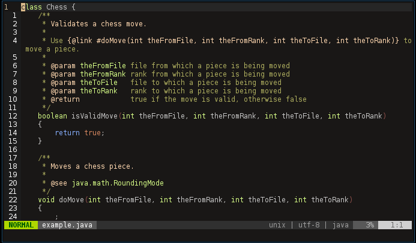

FleCa é um analisador de comentários tipo-Java feita por um filtro de texto Flex.

O ficheiro exemplo.java foi analisado. Foram encontrados x comentários inline, y comentários em bloco e z comentários de documentação.
Comentários Inline
Linha 12:
//Olá. Isto é um comentário de exemplo :D
Linha 22:
//Olá. Isto é outro comentário de exemplo :D
Comentários em Bloco
Linha 1-4 : Comentário em Inglês
/* This program is called
FLex
Comment
Analyzer */
Linha 118-120 : Comentário em Português
/* Comentários de bloco
que permitem abranger várias linhas e
que começam em "/*" e vão até "*/" */
Comentários de Documentação
Comentários de Documentação - Por autor
Por Xavier Francisco.
/**
* @author XavierFrancisco
* @param x value of x
* @return y
* @see "Math"
* @version version1
*/
Por Célia Natália.
/**
* @author CéliaNatália
* @param y value of y
* @return x
* @see "Math"
* @version version2
*/
Comentários de Documentação - Por versão
Versão 1:
/**
* @author XavierFrancisco
* @param x value of x
* @return y
* @see "Math"
* @version version1
*/
Versão 2:
/**
* @author CéliaNatália
* @param y value of y
* @return x
* @see "Math"
* @version version2
*/